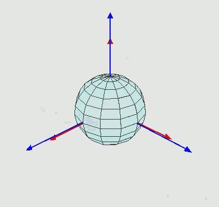
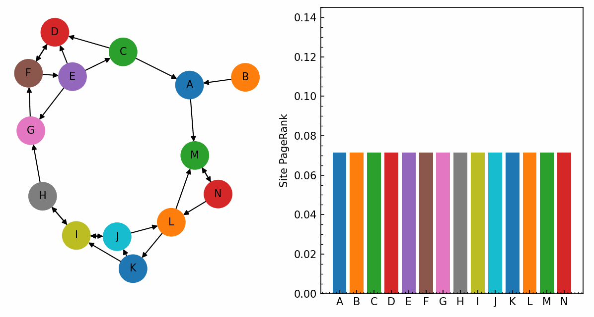

Linear Algebra & Applications
2201NSC
Introduction & Simultaneous Equations
What is Linear Algebra?
Algebra involves the use of the algebraic operations $(\times)$ and $(+)$ on mathematical objects like numbers, vectors, matrices, or functions.
A linear operation $\large ℒ$ is one that obeys the relationship
$ {\large ℒ}\left(\alpha x+ \beta y \right) $ $= \alpha {\large ℒ}(x)+\beta {\large ℒ}(y).$
Linear Algebra begins by considering linear problems of the type ${\large ℒ}(x) = b$:
| $ax$ | $=$ | $b$ |
| $\mathbf a \pd \mathbf x$ | $=$ | $b$ |
| $\mathbf A \mathbf x$ | $=$ | $\mathbf b$ |
| $\dfrac{d}{dt} x(t)$ | $=$ | $b(t)$ |
| $\ds\int x(t)\,dt $ | $=$ | $b$ |
Areas and applications where Linear Algebra is needed
- Mathematics: Solutions to linear systems; solutions to systems of ODEs; function interpolation (e.g. cubic splines); many other applications.

|
\[ \begin{array}{rcl} a_{11}x_1 + a_{12}x_2 + \cdots + a_{1n}x_n &=& b_1\\ a_{21}x_1 + a_{22}x_2 + \cdots + a_{2n}x_n &=& b_2\\ \vdots && \vdots\\ a_{n1}x_1 + a_{n2}x_2 + \cdots + a_{nn}x_n &=& b_n \end{array} \] \[ \left( \begin{array}{ccc} a_{11} & \cdots & a_{1n} \\ \vdots & \ddots & \vdots \\ a_{n1} & \cdots & a_{nn} \\ \end{array} \right) \left( \begin{array}{c} x_{1} \\ \vdots \\ x_{n} \\ \end{array} \right) = \left( \begin{array}{c} b_{1} \\ \vdots\\ b_{n} \\ \end{array} \right) \] \[ \Large A \mathbf x = \mathbf b \] |
Areas and applications where Linear Algebra is needed
- Statistics: Regression (lines of best fit); data approximation; Principal Component Analysis (PCA).
Areas and applications where Linear Algebra is needed
- Computer Science: Computer graphics (especially games); coding theory; computer networking; image compression.
|
 |
$$ {\begin{pmatrix}\cos \gamma &-\sin \gamma &0\\\sin \gamma &\cos \gamma &0\\0&0&1\\\end{pmatrix}}\qquad {\begin{pmatrix}\cos \beta &0&\sin \beta \\0&1&0\\-\sin \beta &0&\cos \beta \\\end{pmatrix}} $$ $${\begin{pmatrix}1&0&0\\0&\cos \alpha &-\sin \alpha \\0&\sin \alpha &\cos \alpha \\\end{pmatrix}}$$ |
Areas and applications where Linear Algebra is needed
- Computer Science: Computer graphics (especially games); coding theory; computer networking; image compression.
Applications: Searching engines
Applications: Searching engines

PageRank algorithm running on a small network of pages. The size of the nodes represents the perceived importance of the page, and arrows represent hyperlinks.
Applications: AI & Machine learning

DALL$\cdot$E (2021)
DALL$\cdot$E (2021)
More details here: Hierarchical Text-Conditional Image Generation with CLIP Latents
ChatGPT (2022)
More details here: GPT-4 Technical Report
Areas and applications where Linear Algebra is needed
- Mathematics: Solutions to linear systems; solutions to systems of ODEs; function interpolation (e.g. cubic splines); many other applications.
- Statistics: Regression (lines of best fit); data approximation; Principal Component Analysis (PCA).
- Physics: Electric circuits; optics; coupled dynamical systems; most of quantum mechanics.
- Chemistry: Balancing chemical reactions; balancing systems of chemical reactions; chemometrics.
- Engineering: Mechanical motion; stress testing.
- Computer Science: Computer graphics (especially games); coding theory; computer networking; image compression.
- Others: Global Positioning System (GPS); finance (balancing market forces); Artificial Intelligence (AI); social networks.
Why do we study Linear Algebra?
-
Linear systems have 'nice' properties that make
them easier to solve
- This helps us to solve many real-world problems...
-
Many nonlinear systems can be studied by building on linear
theories
- Linearisation of nonlinear ODEs
- Perturbation theory (= linear system + nonlinear perturbation)
-
Many mathematical problems rely on linear algebra
- Solutions of differential equations (DEs).
- Series representation of functions (e.g. Fourier theory)
Linear Algebra outline
- Systems of simultaneous linear equations
- Matrices
- Linear transformations
- Eigenvalues and eigenvectors
- Inner products
- Vector spaces
- Factorisation
- Applications
Prerequisite Knowledge
Assumed that you know
- what a matrix is;
- how to add, multiply, and transpose matrices;
- what a symmetric matrix is.
Assumed that you have seen and will quickly recall
- how to interpret matrices as transformations;
- Gaussian elimination;
- how to invert matrices;
- how to calculate determinants;
- how to find eigenvalues/vectors of 2x2 matrices.
Linear Equations
A (real) linear equation in $n$ unknowns is an equation of the form
$ a_1x_1 + a_2x_2 + \cdots + a_nx_n = b $
where
- $a_1, a_2, \ldots, a_n$ and $b$ are (real) coefficients; and
- $x_1, x_2, \ldots, x_n$ are (real) variables.
Examples:
- $ 2 x_1 + 3 x_2 - x_3 - 5x_4 = 0 $
- $2 r + 3 s = 4$
Systems of Linear Simultaneous Equations
Systems of Linear Equations
A system of linear equations is a collection of $m$ simultaneous equations in $n$ unknowns, of the form
\begin{align*} a_{11}x_1 + a_{12}x_2 + \cdots + a_{1n}x_n &= b_1 \\ a_{21}x_1 + a_{22}x_2 + \cdots + a_{2n}x_n &= b_2 \\ &\vdots \\ a_{m1}x_1 + a_{m2}x_2 + \cdots + a_{mn}x_n &= b_m \end{align*}
Examples of Systems of Linear Simultaneous Equations
- $\begin{aligned} 2x + 3y &= 1 \\ 3x - y &= 2 \end{aligned}$
- $\begin{aligned} ax + by &= r \\ cx + dy &= s \end{aligned}$
- $ \begin{aligned} x_1 + x_2 + x_3 &= 3 \\ x_1 + x_2 - x_3 &= 1 \\ x_1 - x_2 + x_3 &= 1 \end{aligned}$
Application example - Balancing a chemical equation
Photosynthesis converts water and carbon dioxide into oxygen and glucose:
$ x_1\text{CO}_2 + x_2\text{H}_2\text{O}\ \rightarrow\ x_3\text{O}_2 + x_4\text{C}_6\text{H}_{12}\text{O}_6 $
What are the coefficients $x_i$? Since matter is neither created nor destroyed, we must have equal amounts of each element on either side.
| C | H | O | |
|---|---|---|---|
| LHS | \(x_1\) | \(2x_2\) | \(2x_1+x_2\) |
| RHS | \(6x_4\) | \(12x_4\) | \(2x_3+6x_4\) |
| \[ \begin{aligned} x_1 &= 6x_4 \\ 2x_2 &= 12x_4 \\ 2x_1 + x_2 &= 2x_3 + 6x_4 \end{aligned} \] | $\rightarrow$ | \[ \begin{aligned} x_1 - 6x_4 &= 0 \\ 2x_2 - 12x_4 &= 0 \\ 2x_1 + x_2 - 2x_3 - 6x_4 &= 0 \end{aligned} \] |
Solving systems of 2 variables
How can we solve the following system?
$\begin{align} 2x_1 + x_2 &= 3 \quad \quad (1)\\ x_1 - x_2 &= 0 \quad \quad (2) \end{align}$
From (2):
$x_2 = x_1$
Sub into (1):
$2x_1+x_1=3$ $\implies x_1=1$
Sub back into (2):
$x_2 = x_1 =1$
Further problems
How can we solve the following system?
\begin{align*} 2x_1 + x_2 + x_3 - 4 x_4 + 2x_5 &= 3 \\ x_1 - x_2 - x_4 + x_5 &= 0 \\ x_2 + 2x_3 - x_4 + 2x_5 &=1 \\ x_1 - x_2 - 2x_3 - 3x_4 - 4x_5 &=10 \\ x_1 + 2x_2 + 3x_3 - 4x_4 + x_5 &=-2 \end{align*}
- Does a solution always exist?
- If it exists, what is the solution?
We need a systematic approach!! 🤔